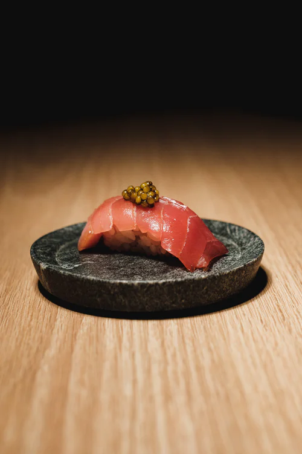
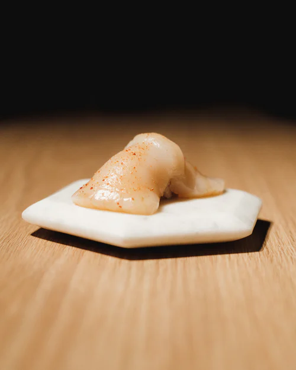
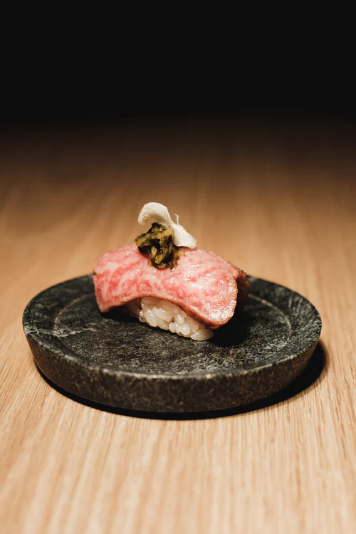

Tarda Mare
Sea to Hand
A fine dining sushi bar where you take a ride through the world of seafood and the explosive taste that each bite will give you.



A fine dining sushi bar where you take a ride through the world of seafood and the explosive taste that each bite will give you.